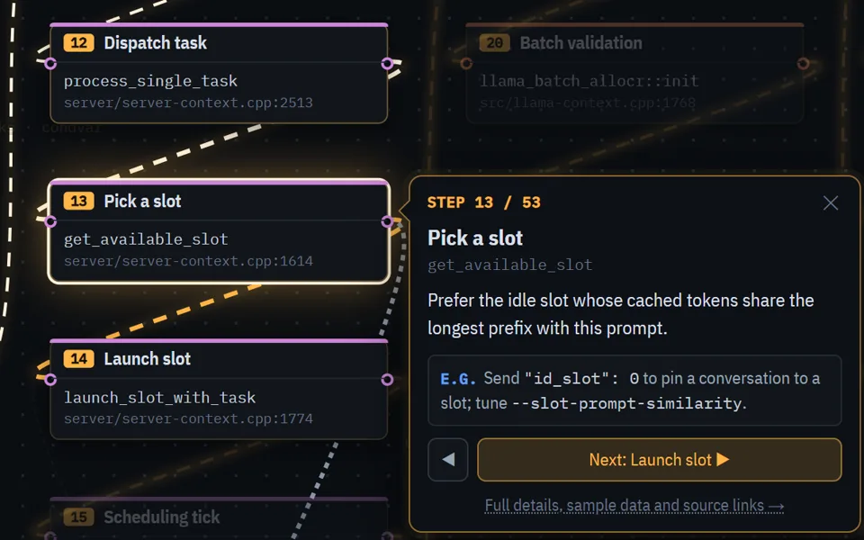
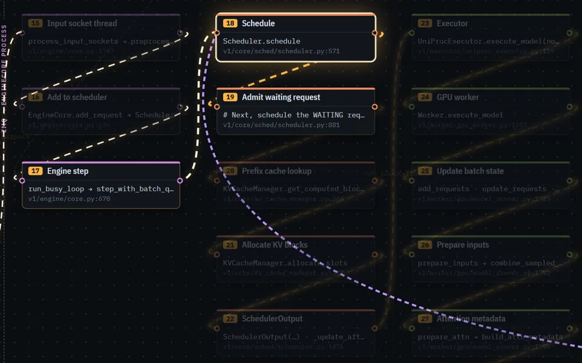
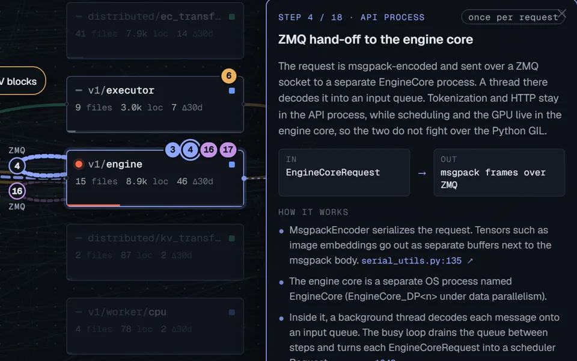

How each engine handles one chat request: an interactive map of each codebase, then all four stages side by side, each with its code path and features.
Interactive maps of the real code. Press Trace and the request walks itself, one function at a time, each linked to its source line.

C++, 53 steps. One process, one inference thread. Watch the request get a slot, run through ggml on the GPU and stream back.
Open the tracer
Python, 59 steps. Two processes over ZMQ, a token-budget scheduler and a paged KV cache.
Open the tracer
Zoomed out, 18 steps. The same trip drawn across vLLM's 164 modules.
Open the mapStep with the arrow keys, click any box for details. Best on a laptop or bigger.
Each engine's steps, time and features for every stage. Pick a stage below, or open a row, to see its code path.